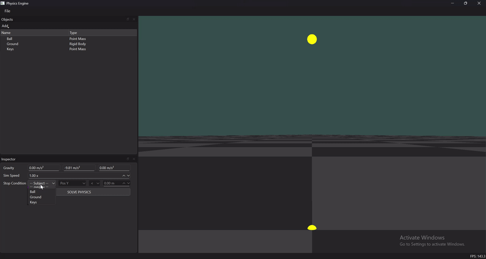

- Generated by
 1.9.8
1.9.8
|
Physics Simulation & Visualization Tool 0.1
A C++ physics simulation engine with real-time 3D visualization
|
A C++ physics simulation and visualization tool for modeling and solving classical mechanics problems through real-time 3D interaction and numerical methods.
This project is a custom-built physics simulation and visualization tool designed to model classical mechanics problems in an interactive 3D environment. Users can construct physical scenarios, manipulate objects directly in the scene, and either simulate their behavior over time or numerically solve for unknown quantities.
While similar tools and engines already exist, this project was built from the ground up as an exercise in understanding computational physics, numerical methods, and modern OpenGL rendering, with a strong emphasis on clean architecture and maintainability. It also explores how visual tooling can help bridge the gap between abstract equations and physical intuition.
 A set of keys is dropped from rest from a height of 20 m, while a ball is simultaneously thrown upward from the ground with an initial velocity of 15 m/s. The system numerically determines the height at which the two objects pass each other.
This project is organized into two major layers and executes across multiple threads to maintain responsiveness during simulation and problem-solving. The physics simulation runs on a dedicated thread, while rendering and UI logic execute independently on the main thread:
A standalone static library containing:
This layer is designed to be independent of rendering and UI concerns
The physics core is designed to be testable in isolation from rendering and UI. Unit tests focus on numerical correctness and regression protection as the system evolves. More information about testing in Testing and Validation.
A key architectural goal is separation of concerns. Numerical solvers are intentionally decoupled from physics-specific code, allowing the same solver infrastructure to be reused for different problem domains.
This is an ongoing independent project and work in progress. The codebase prioritizes clarity, modularity, and extensibility, even when features are incomplete. The current implementation represents a stable foundation for future experimentation and refinement.
Jacob Behnam